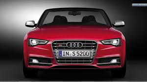
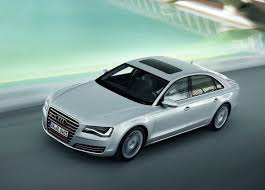
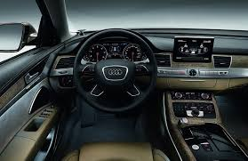
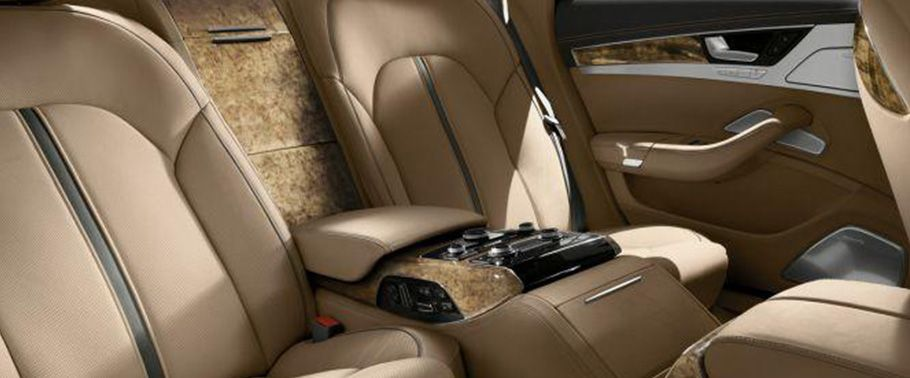

<!DOCTYPE html>
<html>
<head>
<link rel="stylesheet" type="text/css" href="nav.css">
<style type="text/css"> 
.zoomin img 
{
 height: 200px; width: 300px; 
 -webkit-transition: all 2s ease;
 -moz-transition: all 2s ease;
 -ms-transition: all 2s ease; 
 transition: all 2s ease; 
 } 
 .zoomin img:hover 
 { 
 height: 400px; width: 600px;
} 
</style>
</head>
<body background="bbbcxxmmm.jpg" >
<h2 id="top"></h2>
<div class="To">
<ul>
  <li><a href="home.html">Home</a></li>
  <li><a href="#contact">Cars Description</a></li>
  <li><a href="jquery-product-comparison\index.html">Cars Comparision</a></li>
  <li><a href="abtus.html">About the developers</a></li>
</ul>
</div>
<div class="vertical-menu">
  <a href="#">CARS</a>
  <a href="#" class="active">Audi A8l</a>
  <a href="Bmw1.html">BMW I8</a>
  <a href="Bugatti Veyron.html">Bugatti Veyron</a>
  <a href="ferrari f50.html">Ferrari F50</a>
  <a href="laferrari.html">Ferrari Laferrari</a>
  <a href="ford mondeo.html">Ford Mondeo</a>
  <a href="ford mustang.html">Ford Mustang</a>
  <a href="jaguar xe.html">Jaguar XE</a>
  <a href="jaguar xj220.html">Jaguar XJ220</a>
  <a href="koenisegg agera r.html">Koenisegg Agera R</a>
  <a href="lambo veneno.html">Lamborghini Veneno</a>
  <a href="lamborghini aventador.html">Lamborghini Aventador</a>
  <a href="lamborghini gallardo.html">Lamborghini Gallardo</a>
  <a href="lamborghini huracan.html">Lamborghini Huracan</a>
  <a href="mercedes amgcla.html">Mecedes AMG CLA</a>
  <a href="pagani huyara.html">Pagani Huyara</a>
  <a href="porsche carrera gt.html">Porsche Carrera GT</a>
  <a href="Rolls royce.html">Rolls Royce</a>
  <a href="volkswagen golf.html">Volkswagen Golf</a>
  <a href="zenvo st1.html">Zenvo ST1</a>
</div>
<div class="d">
 <p style="color:red;font-size:32px;">Jump to Particular Sections</p>
 <a href="#i" style="color:White;">Introduction</a><br>
 <a href="#t" style="color:White;">Interiors</a><br>
<a href="#p" style="color:White;">Pricing</a><br>
<a href="#e" style="color:White;">Engine</a><br>
<a href="#s" style="color:White;">Specifications</a><br>
</div>
<div class="c">
<h2 id="i"></h2>
<left><h1> Audi A8</h1>

<left><h2> Introduction</h2>
<p1>
<pre>
The Audi A8 is a four-door,
full-size, luxury sedan manufactured 
and marketed by the German automaker Audi since 1994.
Succeeding the Audi V8, and now in its third generation,
the A8 has been offered with both front- or permanent 
all-wheel drive—and in short- and long-wheelbase variants.
The first two generations employed
the Volkswagen Group D platform,
with the current generation deriving from the MLB platform.
After the original model's 1994 release,
Audi released the second generation in late 2002
,and the third and current iteration in late 2009.
<left><h3>Differnt Views</h3>
<left><h4>Front View</h4>
<div class="zoomin">

</div>
<left><h4>Top View</h4>
<div class="zoomin">

</div>
<left><h4>Rear View</h4>
<div class="zoomin">

</div>
<left><h4>Side View</h4>
<div class="zoomin">

</div>
<left><h3 style="color:black;"><a name="t" >Interiors</a></h3>
<left><h3>Interiors</h3>
<div class="zoomin">

</div>
<br>
<div class="zoomin">

</div>
<br>
<div class="zoomin">

</div>
<left><h3 style="color:black;"><a name="p" >Interiors</a></h3>
<left><h3>Pricing</h3>
The price of Audi A8 l is	
 1.18 Crores onwards.
 <left><h3 style="color:black;"><a name="e" >Interiors</a></h3>
<left><h3>Engine</h3>
The Audi A8L comes with a 4.2 litre TDI diesel engine.
It can produce 800 Nm of torque and generate 354PS of power. 
The car can go from 0-100 km/h in 5.6 seconds. 
The top speed of the car is 250 km/h. 
The car has the most powerful engine 
among all the luxury limousines in India.
It’s biggest rivals are
the Mercedes Benz S- class and the BMW 7 Series
both of which just have a 3.0 litre diesel engines
and produce a mere 489Nm of torque, 
which is good, but quite low 
when compared to the power of the Audi A8L.
There are two other engine options that
are available in the Audi A8L series. 
One engine option available is the 6.0L Quattro.
This W12 engine is petrol one 
and it can deliver 450 PS 
and generate a torque of 580 Nm. 
The petrol engine powered car can accelerate
from 0-100 in 5.2 seconds. 
The top speed for this version is also 250 km/hr. 
The third engine variation is the 3.0 TDI Quattro, 
which produces 233 PS and generates a torque of 450 Nm. 
The 0-100 acceleration of the car is achieved in 7.9 seconds
and it has a slightly lower top speed of 243 km/h. 
The Audi A8L has a six speed transmission.
<left><h3 style="color:black;"><a name="s" >Interiors</a></h3>
<left><h3>Specifications</h3>
<table bgcolor="red" width="70%" Border="1" cellpadding="5" cellspacing="5">
<caption></caption>
<tr>
<td>Manufacturer</td>
<td>Audi AG</td>
</tr>
<td>Production</td>
<td>2009 to present</td>
</tr>
<tr>
<td>class</td>
<td>Full-size luxury car (F)</td>
</tr>
<tr>
<td>boot space</td>
<td> 535 l</td>
</tr>
<tr>
<td>Class</td>
<td>luxory</td>
</tr>
<tr>
<td>fuel type</td>
<td>Diesel</td>
</tr>
<tr>
<td>Gear box</td>
<td>8</td>
</tr>
<tr>
<td>top speed</td>
<td>250kmph</td>
</tr>
</table>
</pre>
</p1>
<font size="100px"><a href="#top" style="color:Yellow;"><p style="text-align:center">Back to top</a></font>
</div>
</body>
</html>